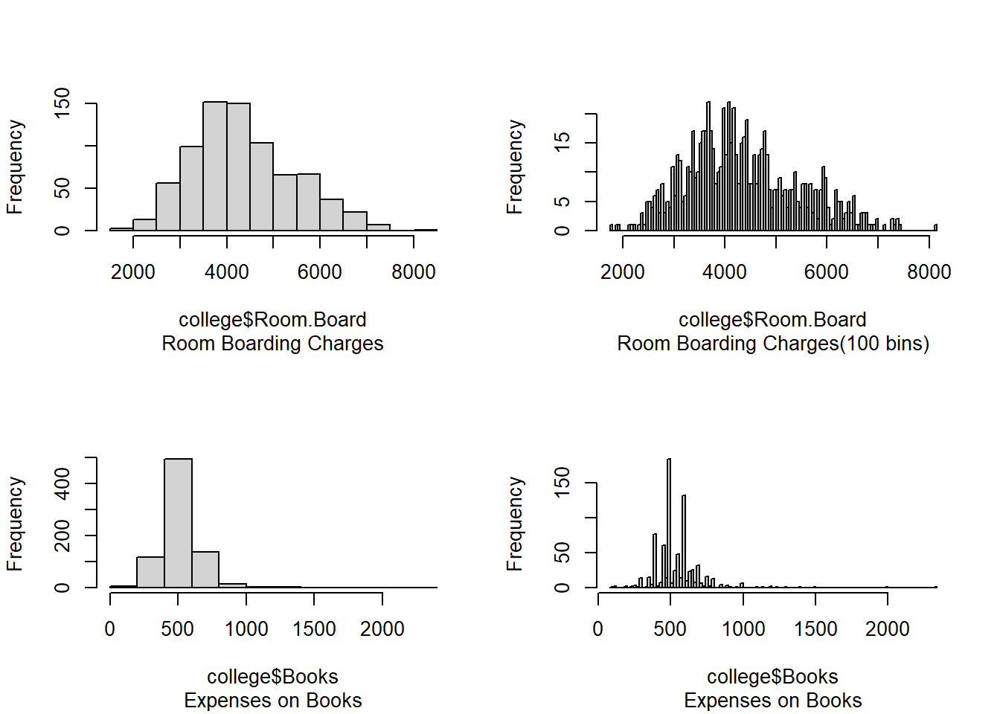

When sample size \(n\) is extremely large, and \(p\) is small, a flexible statistical learning method will perform better than a non-flexible method, because
The low \(p\) allows us to avoid the curse of dimensionality.
Large number of \(n\) allows us to better predict with a flexible method, lowering the chance of overfitting.
(b)
When the sample size \(n\) is very small, and number of predictors \(p\) is very large, a flexible statistical learning method will perform worse than a non-flexible one because a large number of predictors increase the , making it difficult to identify nearest-neighbors. A small number of observations also means that a highly flexible model to could lead to high variance, or overfitting.
(c)
When the relationship between predictors and response is highly non-linear, a flexible model will perform much better because it can better allow for non-linear \(f(x)\), and thus will better approximate a highly non-linear relationship.
(d)
When the variance of error terms, i.e. \(\sigma^2 = Var(\epsilon)\), is extremely high, both flexible and non-flexible methods will lead to inaccurate predictions. However, comparatively, a non-flexible method will perform better as it is less likely to overfit or mis-read noise for actual relationship.
Question 2
(a)
This scenario is a regression problem, because the response / outcome is a continuous variable, i.e. CEO Salary.
Here, we are primarily interested in inference, rather than prediction, because we want to understand which factors affect CEO salary, rather than predicting the salary for any given CEO.
In this scenario, \(n = 500\) and \(p = 3\) .
(b)
This scenario is a classification problem, as the primary response is a qualitative variable (success vs. failure).
Here, we are primarily interested in prediction because we wish to know the response our test data, i.e. new product being launched, rather than understanding the factors behind the response.
In this scenario, \(n = 20\) and \(p = 13\) .
(c)
This scenario is a regression problem, because the response / outcome is a continuous variable, i.e. percentage change in US dollar.
Here, we are primarily interested in prediction instead of inference since our intended purpose to predict % change in US dollar. We are not concerned with the exact factors that cause such a change.
In this scenario, \(n = 52\) (i.e. number of weeks in 2012) and \(p = 3\) .
Question 3
(a)
The sketch is displayed below: —
(b)
In this figure, the curve (C) is the Irreducible Error which is a feature of the data-set, and thus stays constant. The curve(D) represents the Training Error which will always decrease monotonously with increasing flexibility of the fitted model because almost all techniques directly or indirectly aim at reducing the MSE in the training data-set. As flexibility of the method increases, it’s variance will increase [curve (B)] and bias will decrease [curve(D)] because a flexible model is highly variable (change in a single observation will change the fit) and less biased (each observation is closely covered). The sum of curves B, C and E represents the Test Error i.e. Curve A.
Question 4
(a)
Three real-life applications in which classification is useful are: — Email Spam
1. Response: A qualitative binary indicator whether the email is spam or not spam.
2. Predictors: Presence of common words in subject of the email (such as offer, lottery etc.), Presence of name of email account holder in text of email, Unverified attachments, Relative frequency of commonly used words.
3. Goal of the application: Prediction.
Handwriting recognition : ZIP codes on postal envelopes
1. Response: Each of the 5 digits (0-9) - categorical outcome
2. Predictors: A matrix corresponding to an image where each pixel corresponds is an entry in the matrix, and its pixel intensity ranges from 0 (black) to 255 (white).
3. Goal of the application: Prediction
Factors Affecting Consumer purchase amongst competing goods : Which factors most affect the consumers’ purchase of a particular product amongst competing brands.
1. Response: Which one of the competing products does a consumer buy?
2. Predictors: Area, demographics of buyer, advertising revenues etc.
3. Goal of the application: Inference.
(b)
Three real-life applications in which regression is useful are: —
1. Predicting response to dosage of BP medication
i) Response: Blood Pressure (in mmHg)
ii) Predictors: Dose of a given medication, age, vital indicators etc.
iii) Goal of the application: Prediction
2. Factors affecting Crop Yields
i) Response: Crop Yield in units per area
ii) Predictors: Amount of fertilizer applied, Soil pH, Temperature, Machines used, etc.
iii) Goal of the application: Both inference (which inputs yield maximum benefits) and prediction (expected crop yield in a particular season)
3. Increasing operational efficiency in a production line by identifying low-hanging fruits
i) Response: Factory output of a good
ii) Predictors: Various raw materials, number of workers, capital investment, working hours, etc.
iii) Goal of the application: Inference (spending on which input / predictor) will cause maximum increase in output.
(c)
Three real-life applications in which cluster analysis is useful are: —
1. Social Network Clusters: Identifying like-minded twitter users based on their activity.
2. Finding Similar books for a book recommendation software based on past purchase data from users.
3. Gene mapping in evolutionary biology to find clusters of similar genes within a genome / evolutionary lineage.
Question 5
A very flexible approach has following advantages and disadvantages :–
Advantages: Allows fitting to highly non-linear relationships. Better performance when \(n\) is large and \(p\) is small.
Disadvantages: Requires estimation of a large number of parameters. Low level of interpretability. Can lead to overfitting. Does not perform well when \(n\) is very small or data is high-dimensional i.e. large \(p\).
A more flexible approach may be considered when we have a large data (high \(n\)), low dimensionality (low \(p\)), or when we are mainly interested in prediction in a non-linear relationship.
A less flexible approach is preferred when out objective is inference and interpretability of the results. (Or when data is high dimensional or low \(n\).)
Question 6
A parametric statistical learning approach assumes a \(f(x)\) i.e. it pre-supposes a functional form for relationship between predictors and response. On the other hand, a non-parametric approach does not assume any functional form for \(f\) at all. It just tries to best fit the available data. Thus, it requires a very large amount of data.
Parametric approach advantages:
1) Easier to compute and evaluate
2) Interpretation is simpler
3) Better for inference tasks.
4) Can be used with a low number of observations.
Parametric approach disadvantages:
1) If the underlying relationship is far off from assumed functional form, the method will lead to high error rate.
2) If too flexible a model fitted, it will lead to overfitting.
3) Real-life relations are rarely simple functional forms.
The distance between each test point and the test point (0,0,0) is displayed above, and for the six points is
3.00 2.00 3.16 2.24 1.41 1.73
(b)
With \(K=1\), our prediction for \(y\) is “green”, as the nearest neighbor is “green”.
(c)
With \(K=3\), our prediction for \(y\) is “red”, as the nearest neighbors are 1 “green” and 2 “red”.
(d)
If the Bayes Decision Boundary is highly non-linear, then we would expect the best value of \(K\) to be small, because a smaller \(K\) allows us more flexibility in the estimated decision boundary.
Applied
Question 8
(a)
data(College)college <- Collegerm(College)
(b)
rownames(college) <- college[,1]fix(college)
(c)
Private Apps Accept Enroll Top10perc
No :212 Min. : 81 Min. : 72 Min. : 35 Min. : 1.00
Yes:565 1st Qu.: 776 1st Qu.: 604 1st Qu.: 242 1st Qu.:15.00
Median : 1558 Median : 1110 Median : 434 Median :23.00
Mean : 3002 Mean : 2019 Mean : 780 Mean :27.56
3rd Qu.: 3624 3rd Qu.: 2424 3rd Qu.: 902 3rd Qu.:35.00
Max. :48094 Max. :26330 Max. :6392 Max. :96.00
Top25perc F.Undergrad P.Undergrad Outstate
Min. : 9.0 Min. : 139 Min. : 1.0 Min. : 2340
1st Qu.: 41.0 1st Qu.: 992 1st Qu.: 95.0 1st Qu.: 7320
Median : 54.0 Median : 1707 Median : 353.0 Median : 9990
Mean : 55.8 Mean : 3700 Mean : 855.3 Mean :10441
3rd Qu.: 69.0 3rd Qu.: 4005 3rd Qu.: 967.0 3rd Qu.:12925
Max. :100.0 Max. :31643 Max. :21836.0 Max. :21700
Room.Board Books Personal PhD
Min. :1780 Min. : 96.0 Min. : 250 Min. : 8.00
1st Qu.:3597 1st Qu.: 470.0 1st Qu.: 850 1st Qu.: 62.00
Median :4200 Median : 500.0 Median :1200 Median : 75.00
Mean :4358 Mean : 549.4 Mean :1341 Mean : 72.66
3rd Qu.:5050 3rd Qu.: 600.0 3rd Qu.:1700 3rd Qu.: 85.00
Max. :8124 Max. :2340.0 Max. :6800 Max. :103.00
Terminal S.F.Ratio perc.alumni Expend
Min. : 24.0 Min. : 2.50 Min. : 0.00 Min. : 3186
1st Qu.: 71.0 1st Qu.:11.50 1st Qu.:13.00 1st Qu.: 6751
Median : 82.0 Median :13.60 Median :21.00 Median : 8377
Mean : 79.7 Mean :14.09 Mean :22.74 Mean : 9660
3rd Qu.: 92.0 3rd Qu.:16.50 3rd Qu.:31.00 3rd Qu.:10830
Max. :100.0 Max. :39.80 Max. :64.00 Max. :56233
Grad.Rate
Min. : 10.00
1st Qu.: 53.00
Median : 65.00
Mean : 65.46
3rd Qu.: 78.00
Max. :118.00
8 (c) (iv)
As per the summary() function, there are 78 elite universities. The box-plot of Outstate vs. Elite is as below :—
par(mfrow=c(2,2))hist(college$Room.Board, main ="", sub ="Room Boarding Charges")hist(college$Room.Board, breaks =100, main="", sub ="Room Boarding Charges(100 bins)")hist(college$Books, main ="", sub ="Expenses on Books")hist(college$Books, breaks =100, main="", sub ="Expenses on Books")

Question 9
(a)
data(Auto)Auto <-na.omit(Auto)
The predictors Origin and Name in the Auto data set are qualitative, while all the other variables are quantitative, i.e. mpg, cylinders, displacement, horsepower, weight, acceleration, year.
(b) (c)
Min <-rep(0, 7)Max <-rep(0, 7)StDev <-rep(0, 7)Mean <-rep(0, 7)Name <-colnames(Auto)[-c(8, 9)]for (i in1:7) { Min[i] <-min(Auto[, i])}for (i in1:7) { Max[i] <-max(Auto[, i])}for (i in1:7) { Mean[i] <-round(mean(Auto[, i]), digits =2)}for (i in1:7) { StDev[i] <-round(sd(Auto[, i]), digits =2)}rangetab <-as.data.frame(cbind(Name, Min, Max))msdtab <-as.data.frame(cbind(Name, Mean, StDev))rangetab |>kbl() |>kable_classic_2(full_width =FALSE)
model <-lm(mpg ~ . - name, data = Auto)cor <-as.data.frame(model$coefficients[-1])colnames(cor) <-"Coefficient of Regression"cor |>kbl() |>kable_classic_2()
Coefficient of Regression
cylinders
-0.4933763
displacement
0.0198956
horsepower
-0.0169511
weight
-0.0064740
acceleration
0.0805758
year
0.7507727
origin
1.4261405
The above table shows regression coefficients of other variables with mpg.
Thus, per capital crime rate is significantly related with the variables zn, dis, rad, black and medv.
(d)
Yes, there are some suburbs with abnormally high per-capita crime rate. But no such trend is visible in Tax-Rates or Pupil-Teacher Ratio. The plots of these three variables are shown below:—
In this data set, 13 suburbs average more than 8 rooms per dwelling and 64 suburbs average more than 7 rooms per dwelling. The code to find these values is :—